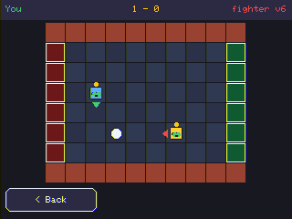
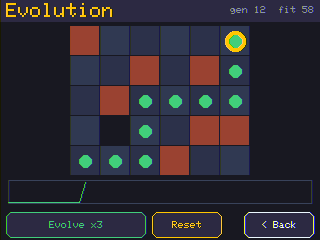
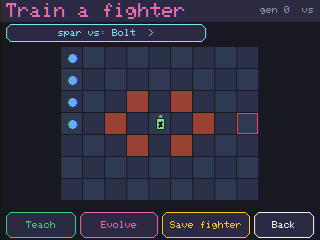
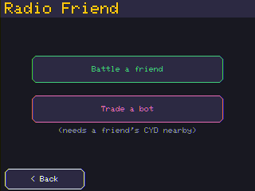

Sharpen a soccer striker with evidence — then run a tournament.
Today's superpower
The Arena is deterministic: same start → same result, every time. So when you change your brain and rematch, any improvement is real, not luck.
Train → save → rematch → keep what helped. That's the loop.

Which recipe wins? (one run, 72 games each)
| Recipe | Win-rate |
|---|---|
| Teach (copy an expert) | 63% — strong, fast |
| Evolve from scratch | 23% — much weaker |
Copy a good dribbler instead of discovering from nothing. Train well to win soccer: hand-coded strikers lose outright; the best recipe here was Teach → Evolve vs the opponent (84%).
⚠️ More training ≠ better
| Take a strong distilled striker, then… | Win-rate |
|---|---|
| nothing (Teach only) | 63% |
| Q-Learn (reward-refine) | 37% / 29% 👎 |
Both Q-Learn variants (vs a cone / vs the live opponent) landed below Teach. A solid imitation policy is fragile — a second objective can pull it off its good habits. Keep the version that wins the rematch, not the one that "trained the most."
🧪 One match isn't an eval
An early one-match test on a device told a tidy story about a recipe. Over 72 matches it didn't hold up.
The Arena is deterministic — so one match is reproducible. But reproducible ≠ representative. Always average over many seeds.
You can watch it happen
Evolve too long on one fixed pitch and the bot “just stays there” in a real match — it memorised that board.
Fix: vary the board while training. (Sound familiar? It's the Day-2 maze lesson again — a memoriser fails on the unseen.)

The loop that levels you up
Caveat: a big gap can need more than one pass.

🩺 “My bot got worse!”
The capstone
No internet, no scoreboard — nothing leaves the room.

The whole week in one question 💭
| Game | Who wins |
|---|---|
| 🧩 Maze | ✍️ Hand-coding — a correct rule generalises |
| 🤖 Battle | ✍️ Hand-coding — clear priorities win |
| ⚽ Soccer | 🧠 Learning — if trained well (hand-coded bots lose; trained wins ~92%) |
Match the method to the problem.
🏁 You did it — all five days
From “I write the rules” → “I train the rules.” You built and trained a robot. 🤖⚽